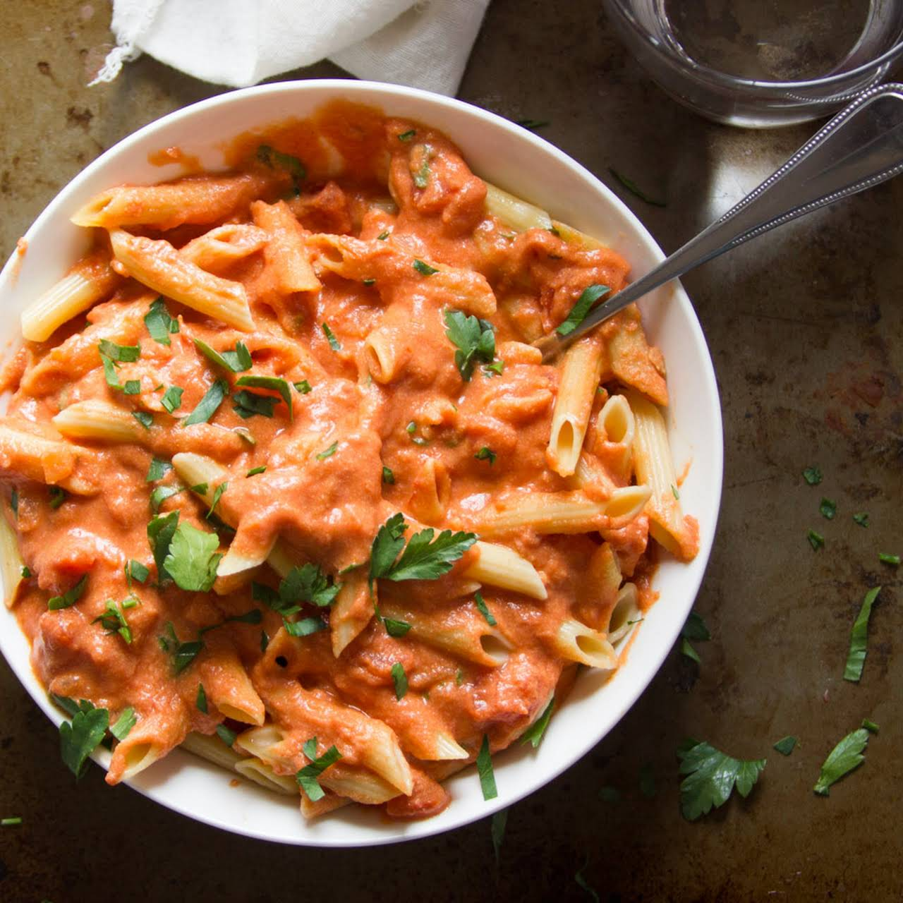

Vodka Penne

Description
An appetizing pasta dish cooked with ground beef and rich rose sauce.
Ingriedients
- 2 tablespoons olive oil
- 1 onion, chopped
- 1 lb ground beef
- 1 teaspoon salt
- 1 teaspoon pepper
- 28 oz crushed tomato, 1 can
- 1/2 cup vodka
- 1/2 teaspoon red chili flake
- 1/2 cup heavy cream
- 4 cups penne pasta
- fresh parsley, to garnish
- 1/2 cup Parmesan, to garnish
Steps
- Heat oil in a large pot over high heat. Cook onion until translucent.
- Add beef, salt, and pepper, cooking until all the moisture has evaporated and the beef is browned.
- Add crushed tomatoes, vodka, and chili flakes, stirring and cooking until half of the liquid has evaporated and the sauce has reduced.
- Add cream, stirring until evenly incorporated.
- Stir in pasta until evenly coated.
- Serve with parsley and parmesan.
- Enjoy!